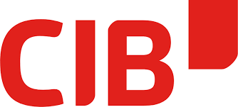

Mark Baumann
{{ isDarkMode ? 'Light Mode' : 'Dark Mode' }}
Download Lebenslauf
Lebenslauf

2017 - 2020: Ausbildung zum Informatik Kaufmann
2020 - 2023: Fachabitur und Praktikant
Projekte
 Code Translator
Zur App
Code Debugger
Zur App
Skills
Angular
Ionic Framework
JavaScript / TypeScript
MySQL / PostgreSQL
Scrum / Kanban Methoden
Impressum
Code Translator
Zur App
Code Debugger
Zur App
Skills
Angular
Ionic Framework
JavaScript / TypeScript
MySQL / PostgreSQL
Scrum / Kanban Methoden
Impressum